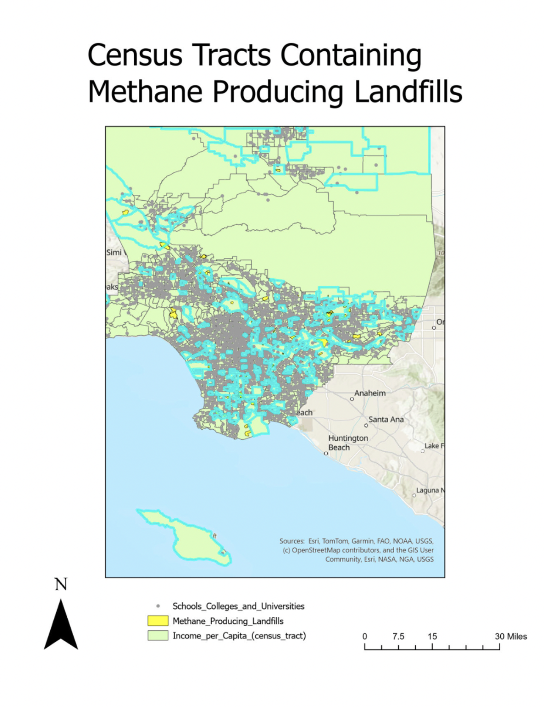

Map Narrative
Methane-producing landfills represent a significant environmental hazard, yet they are not distributed equally across communities — their proximity to residential areas often reflects deeper patterns of environmental injustice. This map overlays methane-producing landfill locations with census tract boundaries and per capita income data across the greater Los Angeles region, revealing which communities bear the greatest exposure risk. The wealthiest community identified in this analysis is Beverly Crest, Los Angeles, which, despite its high income level, falls within or near a census tract containing a methane-producing landfill. I propose a comprehensive environmental risk assessment and mitigation plan for Beverly Crest, with a primary focus on the dangers of methane leakage. In addition, awareness about this issue should be raised because the members of this community may use their wealth and influence to advocate for broader policy change. This map partially solves the problem of environmental risk visibility by making the spatial relationship between landfill locations and community demographics clear and actionable.
GIS Tools & Skills Used
- Spatial Join — linking landfill locations to census tract boundaries
- Choropleth Mapping — visualizing per capita income across census tracts
- Select by Location — identifying tracts that contain methane-producing landfills
- Basemap Integration — adding a reference basemap for geographic context
- Layer Symbology & Classification — styling income and landfill layers for clear visual contrast
- Map Layout & Legend Design — composing a readable, professional final map